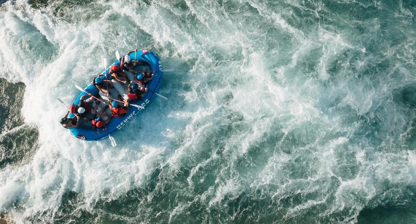
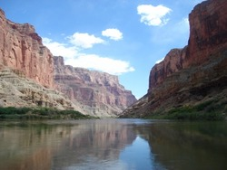
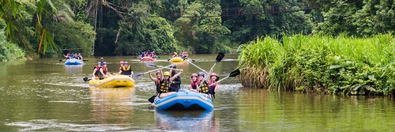
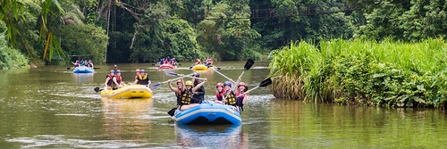

Embark on a journey of adrenaline-fueled excitement with Moars Oars Rafting Co! Based in Rexburg, Idaho, we specialize in crafting unforgettable rafting experiences on the legendary Snake River. With expert guides, top-notch equipment, and a passion for adventure, we're your gateway to thrilling aquatic escapades amidst breathtaking natural beauty.
Moars Oars Rafting Co
History
Established in 1995, Moars Oars Rafting Co traces its origins to a group of intrepid adventurers from Rexburg, Idaho, seeking to conquer the untamed waters of the Snake River. Led by renowned river guide, Jacob Moars, the company started with a single raft and a passion for exploration. Over the years, Moars Oars has become synonymous with thrilling rafting experiences, offering unforgettable journeys through the heart of Idaho's stunning landscapes.
What we hear most often: "Rafting with Moars Oars on the Snake River was exhilarating! The rush of the rapids and breathtaking scenery left me speechless. Their expert guides ensured a safe yet thrilling journey. It's an adventure I'll never forget and eagerly recommend to fellow adrenaline seekers!"
Adventure Awaits You
 
